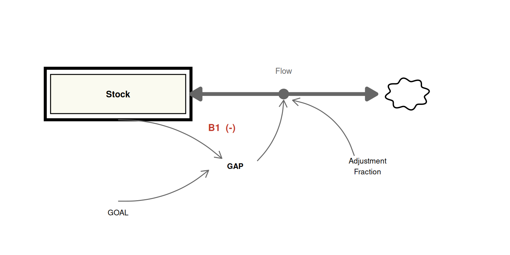
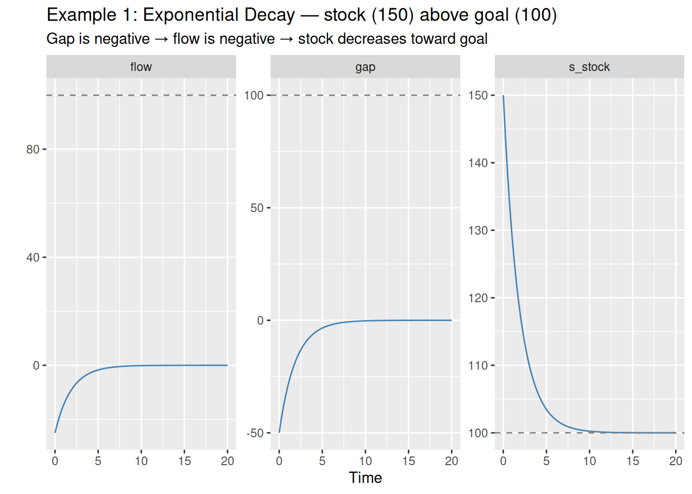
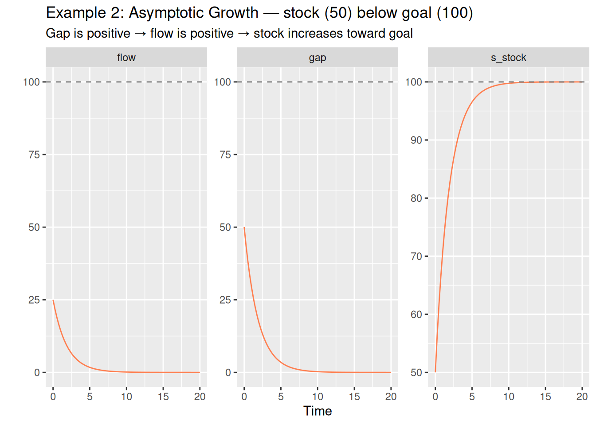
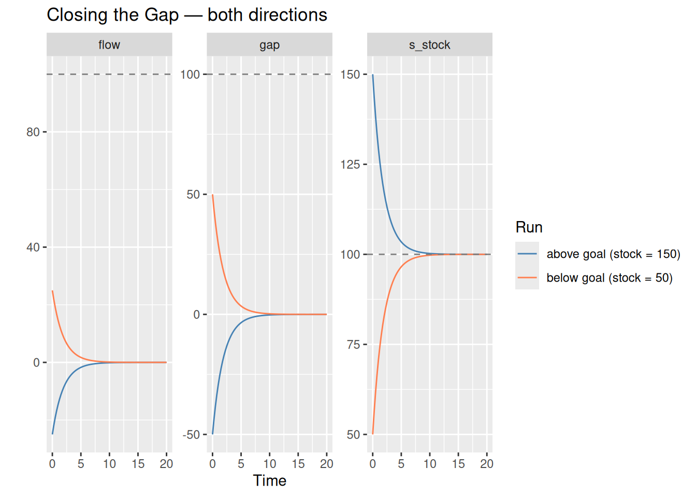

library(deSolve)
library(tidyverse)SD Tutorial 4: Closing the Gap
Goal-seeking behavior and the bidirectional nature of negative feedback
Required R packages
Acknowledgement
The core content behind this tutorial derives from the Road Maps curriculum, developed by the System Dynamics in Education Project (SDEP) at MIT under the direction of Professor Jay Forrester. I’d like to give a personal thanks to Lees Stutz of the Creative Learning Exchange (CLE) for introducing me to the Road Maps curriculum, and for supporting my own SD journey.
Source material for this tutorial comes from Generic Structures: First-Order Negative Feedback (D-4475-2).
Goal-Seeking Behavior
In the previous tutorial, we explored exponential decay — a negative feedback system where a stock drains asymptotically toward zero. But zero is just one possible goal. The generic structure of a first-order negative feedback loop is more powerful than that: the stock will always asymptotically seek any goal you specify, whether it is being approached from above or below.

Stick around till the end of the tutorial for a bonus insight about how this generic structure can serve as a universal problem-solving tool.
The Road Maps curriculum summarises goal-seeking behavior neatly in a single observation:
“A negative feedback loop creates goal-seeking behavior. The stock will always asymptotically try to reach the goal to be in a state of stable equilibrium.”
The key insight in this tutorial is about how we define the gap between the stock and its goal. In the previous tutorial, the gap was written as stock − goal, which produces a positive value when the stock is above the goal, and requires a hardcoded minus sign to turn the flow into an outflow. Here we flip that definition:
\[\text{gap} = \text{goal} - \text{stock}\]
This small change has an important consequence: the sign of the gap — and therefore the sign of the flow — is now self-managing and bi-directional. A positive gap (stock below goal) drives the stock upward. A negative gap (stock above goal) drives the stock downward. The same generic structure handles both cases without any modification.
The Generic Model
Functional R code
We define simulation time using generic units.
START <- 0; FINISH <- 20; STEP <- 0.25
simtime <- seq(START, FINISH, by = STEP)The model has two parameters: the goal the stock is seeking, and the adjustment time controlling the speed of closure.
params <- c(p_goal = 100, # units — desired level of the stock
p_adjustment_time = 2) # time — time constantNow we define the model. Notice that the gap is expressed as p_goal - s_stock. This is the critical difference from the previous tutorial: the flow inherits its sign directly from the gap, so no manual sign correction is needed on ds_dt.
model <- function(time, stocks, params) {
with(as.list(c(stocks, params)), {
c_gap <- p_goal - s_stock # units — positive: below goal; negative: above goal
f_flow <- c_gap / p_adjustment_time # units/time — sign drives growth or decay
ds_dt <- f_flow
return(list(c(ds_dt),
gap = c_gap,
flow = f_flow))
})
}Example 1: Exponential Decay (Stock Above Goal)
Our first example demonstrates the classic exponential decay case. The stock begins at 150 — above the goal of 100. The gap is therefore negative, which produces a negative flow, which reduces the stock. The system self-corrects downward toward the goal.
This is the same behavior seen in the company downsizing example from Tutorial 3: the stock asymptotically approaches its target, with the rate of change slowing as the gap closes.
output_decay <- data.frame(
ode(y = c(s_stock = 150), times = simtime, func = model,
parms = params, method = "euler")
) %>%
gather(key = "variable", value = "value", s_stock:flow)
ggplot() +
geom_line(data = output_decay, aes(x = time, y = value), colour = "steelblue") +
geom_hline(yintercept = params["p_goal"], linetype = "dashed", colour = "grey50") +
facet_wrap(vars(variable), scales = "free") +
xlab("Time") +
ylab("") +
labs(title = "Example 1: Exponential Decay — stock (150) above goal (100)",
subtitle = "Gap is negative → flow is negative → stock decreases toward goal")
Notice that the gap panel starts at −50 and rises to zero, while the flow panel mirrors it exactly (scaled by the adjustment time). The s_stock panel shows the familiar asymptotic decay curve settling at 100.
Example 2: Asymptotic Growth (Stock Below Goal)
Now we run the exact same model with the stock beginning at 50 — below the goal of 100. The gap is now positive, the flow is positive, and the stock is pushed upward toward the goal.
This is where the inverted gap definition pays off. The same generic structure, with no modifications, now produces asymptotic growth — the mirror image of exponential decay. This is still unambiguously negative feedback: the loop is still goal-seeking and self-correcting. The stock approaches the goal, the gap closes, the flow diminishes, and the system settles. The direction of approach is simply reversed.
output_growth <- data.frame(
ode(y = c(s_stock = 50), times = simtime, func = model,
parms = params, method = "euler")
) %>%
gather(key = "variable", value = "value", s_stock:flow)
ggplot() +
geom_line(data = output_growth, aes(x = time, y = value), colour = "coral") +
geom_hline(yintercept = params["p_goal"], linetype = "dashed", colour = "grey50") +
facet_wrap(vars(variable), scales = "free") +
xlab("Time") +
ylab("") +
labs(title = "Example 2: Asymptotic Growth — stock (50) below goal (100)",
subtitle = "Gap is positive → flow is positive → stock increases toward goal")
The gap panel now starts at +50 and decays to zero, while s_stock rises to meet the goal from below. It is worth dwelling on this: the behavior looks like growth, but the underlying feedback is purely corrective. The system is not amplifying itself — it is closing a gap. This is fundamentally different from the exponential growth produced by a positive feedback loop, where growth accelerates indefinitely. Here, the closer the stock gets to the goal, the weaker the corrective force becomes, until the system comes to rest.
Comparing Both Runs
Plotting both runs together makes the symmetry explicit.
bind_rows(
output_decay %>% mutate(run = "above goal (stock = 150)"),
output_growth %>% mutate(run = "below goal (stock = 50)")
) %>%
ggplot(aes(x = time, y = value, colour = run)) +
geom_line() +
geom_hline(yintercept = params["p_goal"], linetype = "dashed", colour = "grey50") +
facet_wrap(vars(variable), scales = "free") +
xlab("Time") +
ylab("") +
scale_colour_manual(values = c("above goal (stock = 150)" = "steelblue",
"below goal (stock = 50)" = "coral")) +
labs(title = "Closing the Gap — both directions",
colour = "Run")
The two runs are perfect mirror images around the goal. This symmetry is a direct consequence of defining the gap as goal − stock: the model handles both cases with a single, unmodified equation. Whether you are downsizing a workforce, restoring an ecosystem, or growing a customer base toward a target, the same generic structure applies.
Conclusion
The generic first-order negative feedback structure is one of the most transferable structures in system dynamics. By defining the adjustment gap as goal − stock rather than stock − goal, we gain a model that is:
- Bidirectional — the same function produces decay when the stock is above the goal and growth when it is below
- Self-correcting in both directions — no hardcoded signs needed; the flow’s direction is determined entirely by the gap
- Genuinely goal-seeking — in all cases, the stock asymptotically approaches the goal, the gap closes, and the system reaches stable equilibrium
Bonus
In my own personal career as a consultant, this generic negative-feedback structure has been been one of the most powerful problem-solving heuristics I’ve ever come across. Nearly any “problem” you can conceive of can be reframed in terms of:
“Problem” == “Difference between desired state and current state”
I would challenge you to think of a problem that cannot be reframed in this way.
A. “My son isn’t doing his system dynamics homework.” B. “My team isn’t winning enough proposals”
A’. My son needs to complete four assignments per week; he’s currently completing none. B’. On average, we need to win $200k of work per quarter; we’re currently winning only half of that.
This “gap-closing” reframing of problems anchors them in something tangible that can be improved incrementally. Importantly, it makes the problem less personal! Of course, the reframing doesn’t necessarily point to an immediate solution, but we now know what success looks like, and we can probe and test how to get there.
Do I need to sit down with my son, next to him while he does his homework at least once per week, twice? Does he just need a reminder? Will I be happy if next week he’s just getting in two assignments? Does measurable, gradual progress not deserve acknowledgement before expecting too much too soon?
Does my team need to apply for more proposals per quarter? Do we need to focus on winning bigger projects? Is there something lacking about the quality of our proposals? Is there something wrong with the composition of our team?